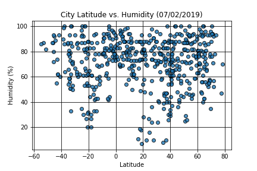

 As you can see there does not seem to be a discernable trend regarding latitude and humidity. If we were to draw a regression line that line would look more or less straight than showing any positive or negative correlation.